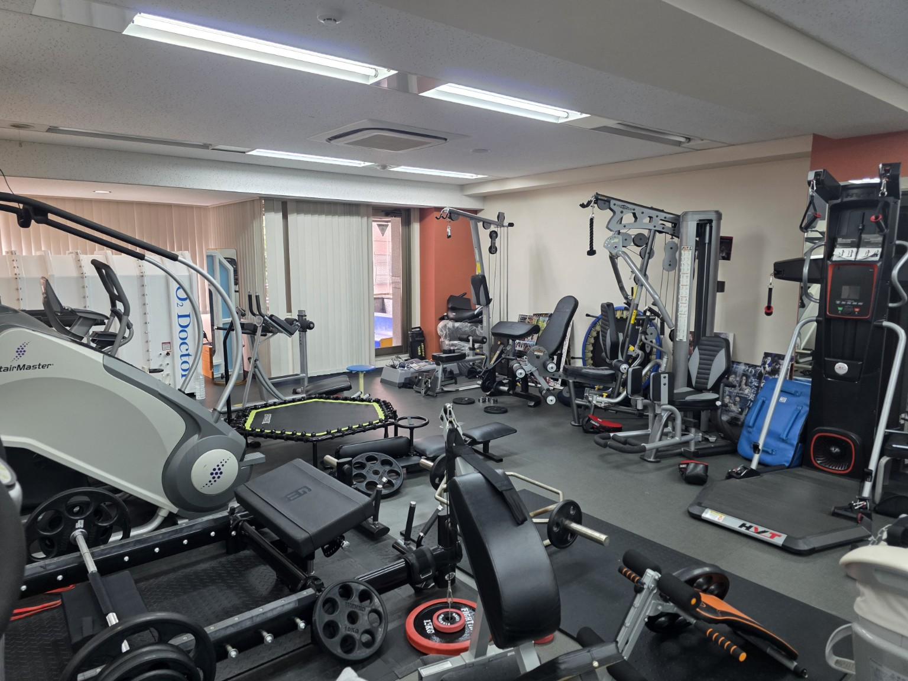

LMPライフメイクパートナーズ
YOUR NEXT CHAPTER
あなたの 一歩が、 この 会社の 未来に なる 。
01 / WHAT WE DO私たちの 事業
仕事の 先に、
誰かの 人生がある。
お金 住まい 万が一 健康 災害 老後
RCリアライズクラブ
自分の 人生を 考える、
きっかけと 相談先を 届ける。
OSMA
02 / FIND YOUR ROLE関われる 仕事
あなたの 得意が、
誰かの 未来に つながる。
ABUSINESS DEVELOPMENT
広げる 営業・事業開発
具体的な 仕事内容
LMP加盟営業 不動産会社などの 経営者へ 事業モデルを 提案し、 加盟・開業まで 進める。 RC入会営業 企業に 人生支援経営を 提案。 経営者向けの PRESIDENT JOURNEYも 活用し、 RC導入に つなげる。 提携・OEM事業開発 他社と 協力して 広げる 方法や、 相手企業の ブランドで 届ける 事業を 企画する。 住宅営業・実行支援 日本リアライズの 現場で 住まいの 相談・提案・契約実務を 担当し、 実践の 知見を 教育にも 活かす。
BPARTNER SUCCESS
育てる 加盟店・企業の 活用支援
具体的な 仕事内容
LMPの SV〈加盟店支援〉 加盟店の 立ち上げ、 法人 開拓、 相談対応を 支援。 数字や 課題を 一緒に 確認し、 改善する。 RC導入・活用支援 企業担当者や 社員に 使い方を 案内し、 利用状況や 声を もとに、 日々 使って もらえる 工夫を 重ねる。 加盟店研修・営業教育 営業ノウハウを 教材・研修に 落とし込み、 学習や ロープレを 通して 加盟店を 育てる。 相談窓口・案件進行管理 相談を 担当者や 専門家へ つなぎ、 対応状況と 次の 行動を 確認する。
CCREATIVE & PRODUCT
つくる コンテンツ・AI・ 仕組み
具体的な 仕事内容
コンテンツ制作 PJ・LIFE JOURNEYの シナリオ、 動画、 教材、 診断、 LPなどを 制作する。 マーケティング・広報 SNS、 広告、 セミナー、 導入事例を 通して、 企業との 新しい 接点を つくる。 LINE・Lステップ運用 配信設定と 反応の 確認、 シナリオ改善を 担当し、 その 人に 必要な 情報が 届く 流れを 育てる。 AI・システムの 企画、 開発・運用 OSMA、 みお先生、 アオ先生、 Recordなどの 現場要望を 整理し、 開発・確認・改善を 進める。
DHEADQUARTERS OPERATIONS
支える 本部運営・組織づくり
具体的な 仕事内容
LMP加盟本部業務 加盟手続き、 研修手配、 教材・システムの 利用案内、 問い合わせ対応、 加盟店情報を 管理する。 RC本部業務 入会企業・会員の 管理、 導入手続き、 請求、 問い合わせ対応を 通して サービスを 運営する。 採用・人事・経営管理 採用や 育成、 評価制度づくり、 経理・予算管理を 通して、 成長する 組織を 支える。
03 / WHY NOW今、 この フェーズに 入る 意味
今だから、
つくれる未来がある。
CREATE THE STANDARD
あなたの 工夫が、
全国で 使われる 「型」に なる。
LEARN THE WHY
経営の そばで、
判断の 「なぜ」を 学ぶ。
BUILD WITH AI
AIと 人生支援を、
自分の 仕事で 結びつける。
GROW INTO LEADERSHIP
チームを 育てる、
事業を 動かす役割へ。
04 / YOUR POSSIBILITIESここから 描く、 自分の 未来
GROW WITH THE BUSINESS.
会社の 未来に、
自分の可能性を重ねよう。
知る。 試す。
自分で 届ける。
チームを 育てる。
OUR PURPOSE
お客様の 未来も。
一緒に 働く、
あなたの 未来も。
05 / LIVING OUR PURPOSE理念を、 社員の 毎日に
健康が 大切。
だから、 会社に
ジムを つくりました。

YOUR FUTURE, RIGHT HERE.
ジムまで - 10秒
入会費 - 0円
月会費 - 0円
いつまでも、
働ける 自分へ。
大切な 家族を、
守れる 自分へ。
人生を 最後まで、
自分の 身体で 楽しむ。
MAKE IT PART OF YOUR DAY.
「よし、 ちょっと 動こう」が、
すぐに 叶う。

LET’S BUILD WHAT’S NEXT.